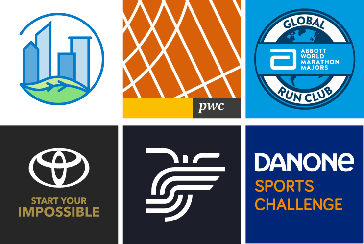
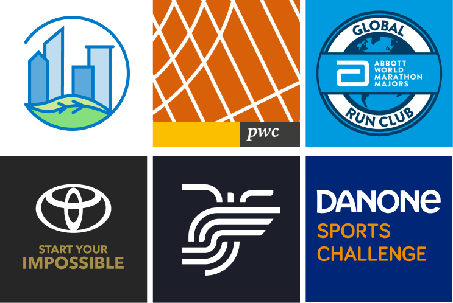

Virtual-Clubs
One of my main tasks within Sport Heroes has been to work with clients who wanted to have an application with a higher degree of customisation, what we called internally a "Virtual Club".
This option allows companies to customise the application with a different logo, a different name, colours and visual identity determined by them and a series of other customisable elements.
- Roles: UI Design, UX experience, Web design
- Tools: Figma, Webflow
- Year: 2021-2022
- Context: Workplace
Customer and client understanding
Before "get down to work", my role as a designer is also to understand what the client wants and what they are looking for. This does not mean that the client gives me guidelines and I follow them. My task as a designer is to understand the client and translate their needs into design solutions.
I have been involve in around 10 different Virtual Clubs. Some clients had a very clear idea about the final result they wanted to achieve. These clients provided me with all the necessary elements. However, there were also clients who did not know not what they wanted and needed support to explore the different possibilities.
It was a team work in which many people were involve. Some people think that designers are not involve in the relathionship with the client, however, that's not true. I strongly believe that the designer should be involve in the communication with the client and so it was.
Design process
Client assets
Before starting to design anything, I review all the different elements that the client has provided us with. As a general rule, we usually ask for the style/branding guide and the different elements we need, i.e. typography to be used, images, illustrations, etc.
 For this type of Virtual Clubs we have certain ''limitations'', i.e. within the app we use a limited number of colours, 2 different weights of typography, etc., we do not need an exhaustive knowledge of the brand elements, but some knowledge of them and the rules of use is required.
For this type of Virtual Clubs we have certain ''limitations'', i.e. within the app we use a limited number of colours, 2 different weights of typography, etc., we do not need an exhaustive knowledge of the brand elements, but some knowledge of them and the rules of use is required.
I review as well the presence of the brand on the internet, that is, its website, its social networks, etc., this allows me to better understand the brand and how the brand communicates with its customers. This process is of great help to me during the subsequent prototyping process, especially if I need to design some visual elements for the client.
Once I have compiled all the elements I need, I review and study them. I group them in one place and I start with the next stage of the design process.
Prototyping
The outcome of the prototyping process is an interactive prototype that will help the client to visualize how the final app will looks like.
The prototype is customised with the client's colours and typography and other graphic elements can be added.
The prototype will also serve as a reference for the developers.
It is a process in which we also ask clients to give us their opinion before deliver the final app.
Other elements
The design process is not only about getting a working prototype, but also about designing a whole series of elements that are part of a new application, i.e. icons, visual elements for the Play Store and Apple Store, etc.
 
I was also in charge of designing a landing page to promote the new app. The landing pages were made using Webflow and usually had a similar look and feel adjusted to the client's visual identity.

I was also in charge of designing a landing page to promote the new app. The landing pages were made using Webflow and usually had a similar look and feel adjusted to the client's visual identity.

Learnings
Working on these Virtual Clubs projects was a very enriching experience thanks to the variety of tasks to be performed.
It is a job where deadlines are very important and must be met, so it was a very good apprenticeship that helped me to improve my ability to organize my workload.
My communication skills improved a lot as well. I had to learn to explain my decisions to the client and to the developers.
It was also a very good Figma training. Working with Figma everyday helped me to refine my Figma skills.